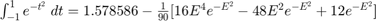

Practica 4 Convolución y Correlación de señales en tiempo continuo
Materia: Señales y Sistemas
Profesor: Dr. Rafael Martínez Martínez
Grupo: 2TV1
Alumnos:
Panama Segura Sayuri
Perez Escobar Hiram Etzael
Robles Filio Eduardo
Rodriguez Moreno Luis Manuel
Contents
Objetivos
- Conocer métodos básicos de integración numérica.
- Manipulación de instrucciones en MATLAB.
- Simular convoluciones y correlaciones de señales continuas.
Introducción
De acuerdo con el teorema fundamental del cálculo, si una funcion es integrable y entonces.
Con esto encontramos el valor numérico asociado a el área limitada por:
- La funcion
- La recta (r1) entre los puntos
- La recta (r2) entre los puntos
- La recta (r3) entre los puntos
Ovservese la siguiente gráfica donde:
El valor de el area sombreada será:
En ocaciones encontrar es dificil o imposible. Esto lo podemos ver claramente con el siguiente ejemplo:
Si quisieramos encontrar el área bajo la curva de cuando mediante notamos que no podemos obtener , pero esto no quiere decir que sea imposible aproximar un valor para ello.
Es aqui donde es relevante hablar de los Métodos de Integración Numérica que analizaremos a continuacion.
Formulas Cerradas de Newton-Cotes
Estas formulas ayudan a resolver integrales como la que hemos propuesto anteriormente bajo el siguiente esquema:
Se piensa que es derivable un determinado numero de veces y además la derivada es continua, de acuerdo a la Interpolación Polinómica de Lagrange sabemos que la forma de una función puede aproximarse por un polinomio de grado n (el grado dependerá del número de puntos donde el polinomio y la funcion coincidan) mas un término de error.
con y
La idea es integrar un polinomio que se parece a , así la integral resulta más fácil por la versatilidad de los polinomios para este fin.
De acuerdo a la siguiente imagen
Tenemos que:
- con
Regla del Trapecio ()
donde
Esta formula de aproximacion tiene algo que se le conoce como Grado de Precisión que se refiere al polinomio de mayor grado de tal manera que las formulas de Newton-Cotes son exactas.
Para nuestro ejemplo propuesto mediante la regla del trapecio se realiza la aproximación de la siguiente forma:

Luego donde
Asi donde
Regla de Simpson ()
donde 
Para nuestro ejemplo propuesto mediante la regla de Simpson se realiza la aproximación de la siguiente forma:
Luego donde
Asi  donde
Regla de los tres octavos de Simpson ()
donde
Para nuestro ejemplo propuesto mediante la regla de los tres octavos de Simpson se realiza la aproximación de la siguiente forma:

Luego ![$\int_{-1}^{1}e^{-t^2}\;dt=\frac{1}{4}[e^{-1}+3e^{-\frac{1}{9}}+3e^{-\frac{1}{9}}+e^{-1}]-\frac{2}{405}[16E^4e^{-E^2}-48E^2e^{-E^2}+12e^{-E^2}]$](Practica_04_eq15785218964325519849.png) donde
donde
Asi donde
Regla Compuesta del Trapecio
La regla del trapecio compuesta surge de la idea de dividir el intervalo en subintervalos de manera que se formen trapecios con altura cada vez más pequeña, así la aproximación del área bajo la curva de una función se parece cada vez más a la ideal a su vez que el error disminuye, pero no desaparece.
Esta idea nos arroja la siguiente formula
donde
Para nuestro ejemplo propuesto mediante la regla compuesta del trapecio se realiza la aproximación de la siguiente forma:
Luego donde
Asi donde
Regla Compuesta de Simpson
A diferencia de la Regla Compuesta del Trapecio donde se utilizan polinomios de grado 1, en la Regla Compuesta de Simpson se utilizan polinomios de grado 2, es decir, parábolas comprendidas en 2 subintervalos, esto nos quiere decir que necesariamente el intervalo debe ser segmentado en partes pares iguales.
Con esta idea en mente, la formula sería la siguiente:
donde
Para nuestro ejemplo propuesto mediante la regla compuesta de Simpson se realiza la aproximación de la siguiente forma:
Luego donde
Asi donde
Cuadratura Gaussiana
Lo que se pretende en este metodo es realizar la como una suma de la evaluación de la función en ciertos puntos multiplicada por ciertas constantes, es decir, como .
Para esto se utilizan los polinomios de Legendre, que se caracterizan por tener propiedades muy útiles en el intervalo
Para fines prácticos nos fijamos en lo siguiente:
- es el polinomio de Legendre de grado
- raices del polinomio

Luego, la forma en la que se utiliza la Cuadratura Gaussiana de una forma más versatil es mediante tablas
Cabe señalar que este método de cuadratura gaussiana se ocupa generalmente en el intervalo , y cuando se requiere realizar una integración en otro intervalo, es necesario hacer el siguiente ajuste:
Para nuestro ejemplo propuesto mediante Cuadratura Gaussiana se realiza la aproximación de la siguiente forma:
Con y apoyandonos en la tabla de raices y coeficientes
Ahora con
Ejercicio 1
Para el PR04 reporte la grafica de la simulación númerica de la convolución y compare con el resultado análitico que obtuvo para el problema 1, esto es, su práctica tendrá que incluir una llamada a la funciónn convconm y posteriormente se tendrá que mostrar (mediante el Publish) la gráfica tanto de las señales invlucradas como el resultado de la convolución, y en esta última gráficara su resultado analitico, se tendrá que incluir el resultado analitico.
Gráficas involucradas
Resultado analítico
Llamada a la función
x= @(t) (-t+1).*(t>=0 &t<1) + (t-1).*(t>=1 & t<2);
h= @(t) (t>=0 & t<1);
convconm1(x,h)
%

Ejercicio 2
Para el PR04 reporte la grafica de la simulación númerica de la convolución y compare con el resultado análitico que obtuvo para el problema 3, esto es, su práctica tendrá que incluir una llamada a la funciónn convconm y posteriormente se tendrá que mostrar (mediante el Publish) la gráfica tanto de las señales invlucradas como el resultado de la convolución, y en esta última gráficara su resultado analitico, se tendrá que incluir el resultado analitico.
Gráficas involucradas
Resultado analítico
Lamada a función
x= @(t) t.*(t>=0 &t<1) + 1.*(t>=1 & t<2);
h= @(t) (t>=1 & t<3);
convconm2(x,h)
%
Ejercicio 3
Para el PR06 reporte la grafica de la simulación númerica de la correalción y compare con el resultado análitico que obtuvo para el problema e), esto es, su práctica tendrá que incluir una llamada a la funciónn convconm y posteriormente se tendrá que mostrar (mediante el Publish) la gráfica tanto de las señales involucradas como el resultado de su correlación, y en esta última graficara su resultado analitico, se tendrá que incluir el resultado analitico.
Graficas involucradas

Resultado analítico
Lamada a función
x= @(t) (t>=0 &t<3) - (t>=3 & t<4);
h= @(t) -(t>=-4 &t<-3) + (t>=-3 & t<0);
convconm3(x,h)
%
Ejercicio 4
Para el PR06 reporte la grafica de la simulación númerica de la correalción y compare con el resultado análitico que obtuvo para el problema f), esto es, su práctica tendrá que incluir una llamada a la funciónn convconm y posteriormente se tendrá que mostrar (mediante el Publish) la gráfica tanto de las señales involucradas como el resultado de su correlación, y en esta última graficara su resultado analitico, se tendrá que incluir el resultado analitico.
Graficas involucradas

Resultado analítico
Llamada a Función
x= @(t) (t>=0 &t<2) - (t>=2 & t<4) ; h= @(t) -1.*((t>=-4 & t<-3) - (t>=-3 & t<0)); convconm(x,h)